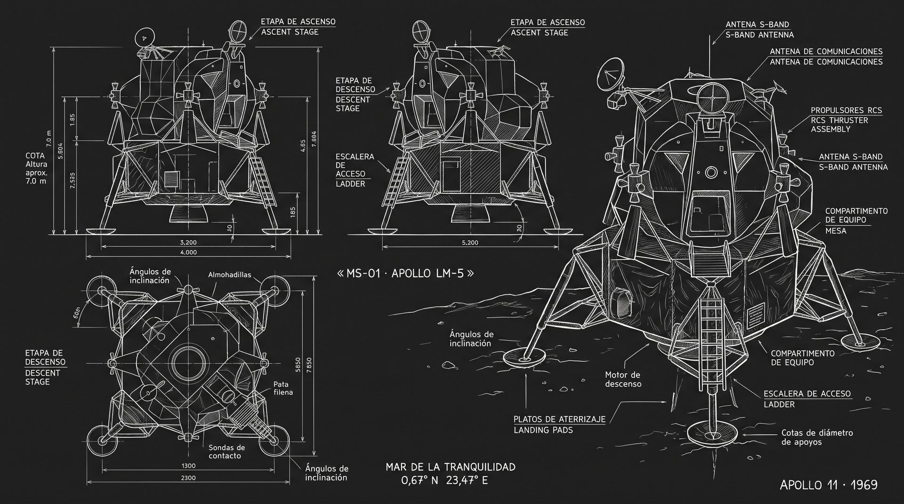

Módulo lunar del Apolo 11

El vehículo de dos etapas que posó a Armstrong y Aldrin en la Luna en julio de 1969. Su mitad de abajo sigue en el mar de la Tranquilidad.
La etapa de descenso sigue allí; la de ascenso se eyectó y se perdió.. Personas: Neil A. Armstrong, Edwin E. «Buzz» Aldrin, Michael Collins
Lo que hizo
- Mi encargo — Me construyeron para ganar la carrera a la Unión Soviética: poner a dos hombres sobre la Luna y traerlos de vuelta sanos y salvos antes de que acabara la década. Kennedy fijó la meta en 1961 y la cumplí con cinco meses de margen.
- Mi motor — Mi motor de descenso podía regular su empuje y volver a encenderse, algo que ningún motor de alunizaje había hecho antes. Estuvo frenando 756,3 segundos y, en los últimos metros, Armstrong tuvo que tomar el mando a mano para no caer en un cráter sembrado de piedras.
- El velcro — El velcro no lo inventó la NASA: lo patentó el suizo George de Mestral en los años cincuenta y al principio nadie le veía futuro. Dentro de mí se usó por todas partes, para sujetar herramientas y trajes, y desde ahí saltó a las zapatillas y a la ropa de todo el mundo.
Modelo 3D, chat y cómic, en tres idiomas
Fuentes
- nssdc.gsfc.nasa.gov/nmc/spacecraft/display.action?id=1969-059C
- nssdc.gsfc.nasa.gov/nmc/spacecraft/display.action?id=1969-099C
- nssdc.gsfc.nasa.gov/nmc/spacecraft/display.action?id=1971-063C
Ver el índice completo · Proyecto del NASA Space Apps Challenge 2026. Contenido con fuentes citadas.